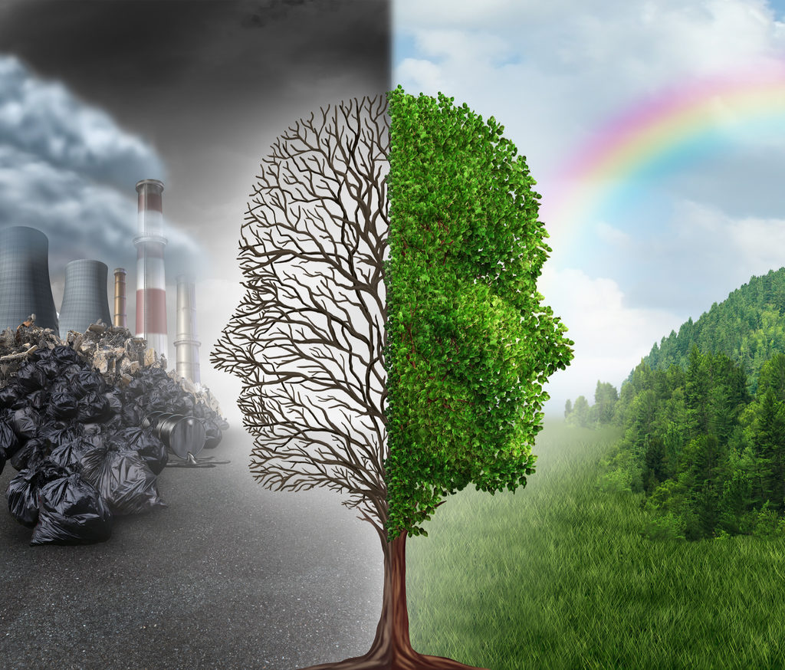

POLLUTION AND POLLUTION CONTROL

Pollution is the introduction of contaminants into the natural environment that cause adverse change. Pollution can take the form of chemical substances or energy, such as noise ,heat or light.Pollutants, the components of pollution,can be either foreign substances/energies or naturally occurring contaminants. Pollution is often classed as point source or nonpoint source pollution.
There are mainly four types of pollution shown: There also has many ways of prevention of all these pollution.